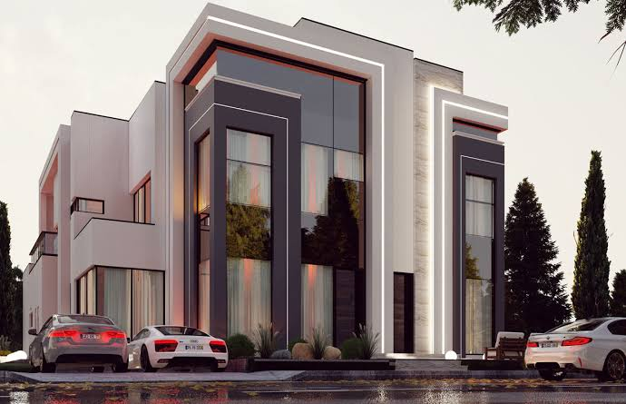

Modern Villa
A sleek architectural visualization of a modern villa featuring open spaces, natural lighting, and minimalist design elements.


A sleek architectural visualization of a modern villa featuring open spaces, natural lighting, and minimalist design elements.